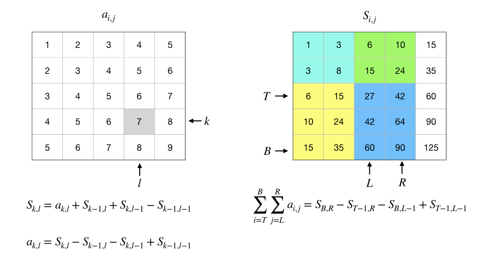

3.2.4. 前缀和¶
前缀和是一种重要的序列数据预处理技术，能大大降低区间和查询问题的时间复杂度。假如一个算法需要对一个数列做多次区间求和，那么用前缀和就会非常高效。
根据要处理的数据集的维度也分各种维度的前缀和，最简单的是处理数列的一维前缀和，复杂一点的有处理矩阵的二维前缀和，当然也可以有三维、四维乃至非常高维的情况，但是很少见，算法编程中最最常用的就是一维和二维两种情况。
注意
前缀和只是一种数据预处理手段，并不是某种有特定功能的算法。它总是需要配合其他算法技巧一起来解决问题，比如差分、二分搜索等等。通常涉及前缀和的题目都会很难！我们将在第8章竞赛题精选精讲中选择一些典型的利用前缀和解决问题的题目进行讲解。
3.2.4.1. 一维前缀和¶
一维前缀和用于对数列进行预处理。给定一个数列 \(A=\{a_n\}\)，我们称其前 \(k\) 项的和 \(S_k=\sum_{i=1}^ka_i\) 为前缀和，从 \(S_1=a_1\) 到 \(S_n=\sum_{i=1}^na_i\) 的所有前缀和就组成了它的前缀和序列，一般也就简称为前缀和。
利用递推公式 \(S_k=S_{k-1}+a_k\) 可以很方便地通过一次遍历在 \(O(n)\) 时间内完成整个前缀和序列的计算，也可以在连续读数的输入循环里直接完成预处理。利用这个公式，我们甚至可以不保存原始的数列，只保存前缀和序列，因为 \(a_k=S_{k}-S_{k-1}\)，这意味着只要有了前缀和序列，我们就可以用 \(O(1)\) 时间来按序号随机访问到原数列中的任意项 \(a_k\)。
前缀和最大的用处是可以在常数时间内计算任意区间和。用 \(L\) 和 \(R\) 分别表示区间的左右端点，区间和为：
所以只需一次减法就可以计算出任意区间和，这能非常有效地提升那些需要大量计算区间和的算法的效率。
小技巧
只要发现算法有计算区间和的需要，就应该考虑使用前缀和。
编程实现
在用C++语言编程实现一维前缀和预处理的时候，通常会使用一个数组来存放前缀和序列。由于需要用前缀和的算法往往数据规模很大，甚至达到百万级以上，所以可以考虑使用全局变量来开数组，但是更好的选择是用vector容器或者动态数组。这里有两点需要注意：一是内存消耗问题，如果内存量紧张，可以不保存原数据，只保存前缀和序列；二是序号问题，C++数组从0开始编号，但是遇到使用前缀和的时候，我们总是把数组开得更大一些，把0号元素设置为0并留着不用，从1号元素开始存放实际数据。这样做相当于在前缀和序列的最前端增加了一个虚拟的 \(S_0=0\)。
下面是在读入数据的同时完成前缀和处理的示例代码，数据也存放下来，统一从数组的1号元素开始存储。另外代码里定义了一个内联函数 ssum() 用来说明怎样求指定区间和，实际编程时由于求区间和的运算非常地简单，所以往往也不会特意去定义一个函数。
#include <cstdio>
inline int ssum(int *sum, int l, int r)
{
return sum[r] - sum[l-1];
}
int main()
{
int n = 0, data[1001] = { 0 }, sum[1001] = { 0 };
scanf("%d", &n);
int d;
for (int i = 1; i <= n; i++) {
scanf("%d", &d);
data[i] = d;
sum[i] = sum[i-1] + d;
}
printf("data: ");
for (int i = 1; i <= n; i++)
printf("%4d", data[i]);
printf("\n");
printf("sum : ");
for (int i = 1; i <= n; i++)
printf("%4d", sum[i]);
printf("\n");
int half = n / 2;
printf("data[1] + ... + data[%d] = %d\n", half, ssum(sum, 1, half));
printf("data[%d] + ... + data[%d] = %d\n", half+1, n, ssum(sum, half+1, n));
return 0;
}
在上面的程序中，ssum()) 函数计算的区间和，其区间并没有采用左闭右开的原则，而是一个闭区间 \([l,r]\)，既包含了头也包含了尾。通常C++等绝大多数编程语言总是采用左闭右开区间的，这是自C语言之后逐渐确立起来的一种标准，但是在使用前缀和时往往会习惯使用闭区间，这是一种比较特殊的情况。
3.2.4.2. 二维前缀和¶
在数学里，把一个 \(m\) 行 \(n\) 列的矩形数阵称为矩阵，通常用大写字母表示。例如 \(A=\begin{bmatrix}1&2&3\\4&5&6\end{bmatrix}\) 就是一个矩阵，由于它有2行3列，所以也叫做2×3矩阵，也记作 \(A_{2\times3}\)。矩阵中的数称为元素，用和矩阵名对应的小写字母加上所在行列号的下标来表示，例如 \(a_{1,2}\) 表示矩阵 \(A\) 中第1行第2列的那个元素。最小的矩阵是1×1矩阵，它实际上也就是一个数，有一个数学名词叫做标量，就是指一个单独的数。
C++语言里很自然的就可以用二维数组来表示矩阵，而且元素的类型也不再局限于数，而是任何基本或派生数据类型。但还是要注意编号问题，在数学里矩阵的行和列都是从1开始编号的，最上面一行是第1行，最左边的列是第1列，但是C++语言的数组无论是行还是列都是从0开始编号的。
一个 \(m\times n\) 矩阵 \(A\) 内部的任意一个 \(k\) 行 \(l\) 列 \((1\le k \le m,1\le l \le n)\) 的矩形区域叫做 \(A\) 的一个子矩阵。例如 \(B=\begin{bmatrix}1&2\\4&5\end{bmatrix}\) 就是矩阵 \(A=\begin{bmatrix}1&2&3\\4&5&6\end{bmatrix}\) 的一个子矩阵。用子矩阵左上和右下两个角在原矩阵中的位置坐标就可以唯一地确定这个子矩阵，例如在刚才那个例子里，子矩阵 \(B\) 的左上角坐标是(1,1)，右下角则是(2,2)。一个矩阵最大的子矩阵就是它自己，最小的子矩阵是由单个元素构成的1×1矩阵，其实也就是元素本身。
在编程时，通常用四个变量 left, top, right, bottom 分别表示子矩阵所在区域的左、上、右、下四个位置的行号或列号，有时在不会有歧义的情况下也直接使用它们的首字母 l, t, r, b。给出这样四个变量的值，就可以在一个二维数组中确定地标识出一个子区域。注意，这里还是采用全闭的区域，不流行什么含头不含尾原则。
很多算法需要随时查询一个数据矩阵中指定区域的子矩阵中所有元素的和。如果不做任何预处理，那么每查询一个 \(k\times l\) 区域的子矩阵和就需要进行 \(k\times l\) 次加法。如果算法中子矩阵和的查询量极大，那么算法的时间效率就会很低，接近 \(O(n^3)\)。在这种情况下，使用二维前缀和对矩阵进行预处理会把单次计算子矩阵和的时间复杂度直接降到 \(O(1)\)。
理解了一维前缀和之后再理解二维前缀和就不难了。位置 \(k\) 上的一维前缀和就是指从数列的首项 \(a_1\) 开始累加到第 \(k\) 项 \(a_k\) 的和。类似地，位置 \(b\) 行 \(r\) 列上的二维前缀和就是指以整个矩阵的第1行第1列那个元素 \(a_{1,1}\) 为左上角，以 \(a_{b,r}\) 为右下角的子矩阵的元素和：\(\sum_{i=1}^b\sum_{j=1}^ra_{i,j}\)。
二维前缀和的预处理也可以随着逐行读入数据的过程同时完成，但是比一维的情况要复杂一些。例如在下面这个4×4矩阵中：
假如我们要计算第2行第3列位置上的二维前缀和，根据逐行逐列读取数据并同时预处理的规则，这时候我们应该已经读入和预处理了以下的部分：
为了计算出第2行第3列上的前缀和，我们可以利用已经计算好的三个前缀和来完成计算：
“上面那个”，也就是第1行第3列上的前缀和 \(s_{1,3}=6\)，它代表子矩阵 \(\begin{bmatrix}1 & 2 & 3\end{bmatrix}\) 的元素之和；
“左边那个”，也就是第2行第2列上的前缀和 \(s_{2,2}=8\)，它代表子矩阵 \(\begin{bmatrix}1 & 2\\2 & 3\end{bmatrix}\) 的元素之和；
“左上方那个”，也就是第1行第2列上的前缀和 \(s_{1,2}=3\)，它代表子矩阵 \(\begin{bmatrix}1 & 2\end{bmatrix}\) 的元素之和。
我们发现，如果我们把“上面那个”和“左边那个”加起来，再减去二者重叠的“左上方那个”的部分，得到的和就应该是恰好缺了右下角元素的那个部分 \(\begin{bmatrix}1 & 2 & 3\\2 & 3\end{bmatrix}\) 的元素之和，把缺了的那个右下角元素 \(a_{2,3}=4\) 加上去就得到了第2行第3列上的前缀和 \(s_{2,3}\)，它等于15。
所以我们在编程时，就随着逐行逐列的顺序，从第1行第1列开始按照上面这个递推公式逐个位置的进行 (“读入的数”+“上面那个”前缀和+“左边那个”前缀和-“左上方那个”前缀和) 的简单运算就可以完成二维前缀和的预处理。这里和一维前缀和时类似，一种比较好的实现是空出C++数组的第0行和第0列，把它们全部初始化为0，数据也好前缀和也好按照数学习惯从第1行第1列开始存放。虽然浪费了一点空间，但是在处理行号或者列号为1的位置时不需要关心出现负数坐标值的问题，而且也更加符合日常习惯。
现在相信大家已经不难理解，甚至能自己推导出怎样利用二维前缀和来计算出任意的子矩阵和了吧。同样只进行三次加减运算就可以了，只不过和预处理时前缀和的计算方法刚好相反，现在对于任意给定了左上右下四个位置的子矩阵，我们要计算的是 (“右下角”的前缀和-“上面那个”前缀和-“左边那个”前缀和+“左上方那个”前缀和)。在这里，全零的0号行和0号列又发挥了神奇的作用，使得程序代码可以大大简化。
另外，和一维前缀和的情形一样，如果为了节约内存，我们也可以不保存原矩阵。从二维前缀和中恢复出 \(k\) 行 \(l\) 列上的原矩阵元素，其实就是计算仅含这一个元素的子矩阵的元素和，所以这时候无非就是上下两个行号都是 \(k\)，左右两个列号都是 \(l\) 而已。
下面是和前面一维前缀和演示程序类似的一个小演示程序，用来说明怎样用C++语言实现常规的二维前缀和预处理以及怎样计算一个给定了左上右下四个坐标的子矩阵和，请务必试着运行一下看看效果。
#include <cstdio>
int m, n;
int data[1001][1001] = { 0 }, sum[1001][1001] = { 0 };
inline int ssum(int left, int top, int right, int bottom)
{
return sum[bottom][right] - sum[top-1][right] - sum[bottom][left-1]
+ sum[top-1][left-1];
}
void print();
int main()
{
scanf("%d %d", &m, &n);
for (int i = 1; i <= m; i++) {
for (int j = 1; j <= n; j++) {
scanf("%d", &data[i][j]);
sum[i][j] = data[i][j] + sum[i-1][j] + sum[i][j-1]
- sum[i-1][j-1];
}
}
print();
int half_row = m / 2, half_col = n / 2;
printf("Split the Data Matrix into 4 blocks and Print Their Sums:\n");
printf("%4d\t%4d\n",
ssum(1, 1, half_col, half_row),
ssum(half_col+1, 1, n, half_row));
printf("%4d\t%4d\n",
ssum(1, half_row+1, half_col, m),
ssum(half_col+1, half_row+1, n, m));
return 0;
}
void print()
{
printf("Data Matrix:\n");
for (int i = 1; i <= m; i++) {
for (int j = 1; j <= n; j++)
printf("%4d", data[i][j]);
printf("\n");
}
printf("Prefix Sum Matrix:\n");
for (int i = 1; i <= m; i++) {
for (int j = 1; j <= n; j++)
printf("%4d", sum[i][j]);
printf("\n");
}
return;
}
3.2.4.3. 前缀和的常见应用¶
前缀和技术在算法编程中的应用非常广泛，下面列举一些最常见的应用，请大家作为思考题自行思考如何利用前缀和来解决这些问题。
1、求数列的平衡位置
在一个给定的数列 \(\{a_n\}\) 中寻找一个所谓的平衡位置 \(k\)，使得在它之前的所有项之和与在它之后的所有项之和相等：\(a_1+\cdots+a_{k-1}=a_{k+1}+\cdots+a_n\)。
2、寻找具有特定和的子区间（子区域）
给定一个数列或矩阵，以及一个数 \(s\)，寻找是否存在和为 \(s\) 的子区间或子区域。
3、求使得区间和小于特定值的最大子区间尺寸
给定一个数列和一个区间和最大值 \(m\)，求一个子区间长度的最大值 \(s\)，使得所有长度小于等于 \(s\) 的子区间的区间和都小于 \(m\)。
示例
输入: arr[] = {1, 2, 3, 4}, k = 8.
输出: 2
解释: 按长度从小到大来看，arr的长度为1的子区间共有4个，它们的区间和分别为 1, 2, 3, 4；长度为2的子区间共有3个，区间和分别为 3, 5, 7；长度为3的子区间有2个，区间和分别为 6, 9；现在发现有一个长度为3的子区间的区间和大于8了，所以答案为2。
4、求指定范围内最大的可分解为连续质数之和的质数
给定一个大于2的正整数 \(n\)，求不大于 \(n\) 的范围内所有可以拆分为数个连续质数之和的质数中最大的那一个，连续的质数是指至少2个。通常题目会用数组的方式给出多个范围值，要求出所有这些范围值对应的解。
示例
输入: n[] = {10, 30}
输出: 5, 17
解释: 对于第一个范围值10，不大于10的质数中只有5可以拆分成两个连续质数2和3之和，5=2+3；对于第二个范围30，不大于30的质数中，可以表示成连续质数之和的质数有5和17两个，17=2+3+5+7。
5、求两个同尺寸数列（矩阵）的最大同和公共子区间（子区域）
两个同尺寸的数列（矩阵）的公共子区间（子区域）是指起点和终点（左上和右下）相同的子区间（子区域）。给定两个尺寸相同的数列（矩阵），求所有具有相同区间和（区域和）的公共子区间（子区域）中最大的那个尺寸，即所含项（元素）的个数最多。
示例
输入: arr1[] = {0, 1, 0, 0, 0, 0}, arr2[] = {1, 0, 1, 0, 0, 1};
输出: 4
解释: 尺寸最大的公共子区间是从第2项到第5项的那个子区间，尺寸为4。
6、求模m的最大子区间和（子区域和）
给定一个数列（矩阵）和一个模m，求所有模m的子区间和（子区域和）中的最大值。
练习
请认真思考上面这些典型应用场景，要怎样应用前缀和的技巧来高效率地完成这些任务，完成其中至少3个问题。